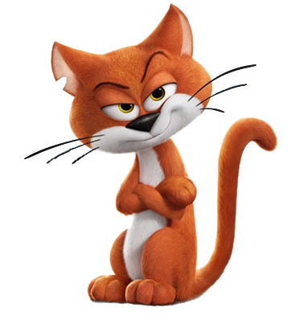
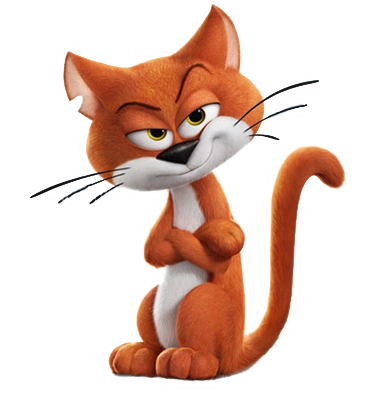
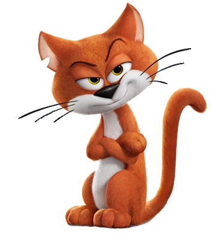
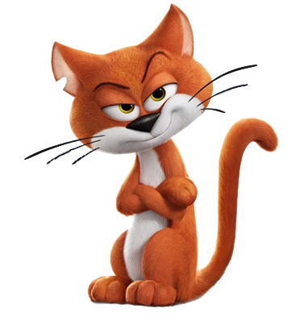

Azrael the cat is Gargamel’s sole companion and confidant. He has been stuck with him ever since he was a kitten. He understands what is said to him, and is very, very smart—maybe even more so than his master. But like any cat, he doesn’t listen to his master, because he knows better. Gargamel can be very talkative, but it’s all just white noise to him. Azrael’s greatest loyalty is to himself, and his goals are always selfish, so we can never really guess how he will act or where his interests will lie.